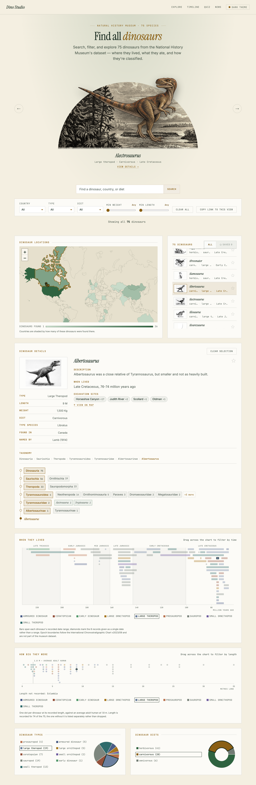
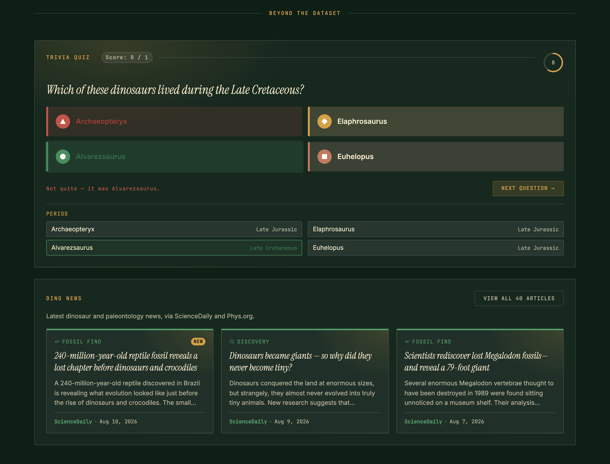

A dataset this large overwhelms easily.
The brief was to turn a National History Museum dataset — hundreds of dinosaurs, their diet, habitat, taxonomy, and discovery history — into a single-page web app people would actually want to explore. The hard part wasn't the content, it was the volume: presenting that much information in a way that stayed informative and entertaining, stayed responsive across devices, and didn't fall over under its own data.
I reviewed two references: National Geographic Kids, built for casual browsing — bright cards, games, and videos, but no interactive map or way to see where a species actually lived, and no taxonomy detail. And DinosaurPictures.org, built as a research tool — real search and filters by period, region, diet, and type, plus an interactive globe, but no designed visual identity.
That gap became the brief: the audit showed search, filters, and a location map were genuinely useful, while a dry, list-only layout proved that data alone isn't engaging — so I invested in more visual content to keep the experience approachable.
Six weeks. One MoSCoW board.
Based on the competitive analysis and the MVP goals, we prioritized the product requirements using the MoSCoW framework. Since there wasn't enough time to implement every possible feature, we focused on the ones that delivered the most value.

This prioritization shaped the project's six sprints. We began with project kickoff and establishing a shared vision statement, followed by defining the MVP and prioritizing key features. Next, we set up the product backlog, created low-fidelity wireframes, and established the team's GitHub workflow. The following three sprints focused on design, development, testing, and deployment to production. The final sprint was dedicated to project wrap-up, bug fixes, and final refinements before launch.
I sketched low-fidelity wireframes and user stories early, before any visual design, to pin down the core flows — searching or filtering by name, country, weight, diet, and length; browsing dinosaurs by location on a world map; and drilling into a single dinosaur's full detail view. Getting this structure agreed with the team first meant the later visual and technical work had a stable shape to build against.


To move quickly against the deadline, I used Google Looker Studio to rapidly prototype how the dataset's diet and type breakdowns could be visualized. It let me show the team a working version of the charts almost immediately, which kick-started the rest of the interactive dashboard.
I conducted two rounds of usability testing with five potential users. During usability testing, participants completed key tasks while sharing their thoughts and challenges.
First round of usability testing

Second round of usability testing
In response, I added a scrollable dinosaur list beside the map, since overlapping pins had made it hard to select a single dinosaur, and rebalanced the detail page with the missing fields, like species, diet, and weight. This round surfaced a few new issues, including a participant noting, "I know the numbers but I can't picture how big these things actually were." Across both rounds, the most consistent theme was that the page felt informative but not engaging, fun, or gamified enough.

Simplify until it's legible.
1. Taxonomy visualization
The taxonomy data was more complex than expected — rendered in full, it produced a very deep evolutionary tree that would have overwhelmed rather than informed the user. My first fix was an interactive diagram that pruned the tree down to just the selected dinosaur's branch, but even pruned, a tree layout spent most of its space on connecting lines rather than information. I replaced it with a straight breadcrumb of the selected dinosaur's lineage, paired with a ladder of clickable rungs — one per rank, each showing its sibling clades and how many dinosaurs fall under them, with the unselected ones collapsed behind a single "+N more" toggle instead of spread out across a canvas. Clicking any rung filters the whole app to that clade.
2. Map visualization
The dataset only recorded country-level location data. A literal pin per dinosaur would have piled multiple dinosaurs on top of each other in the same country, making individual dinosaurs impossible to select. I used a choropleth map instead — highlighting the density of dinosaurs per country.

Everything, on one scroll.
After refining the design through two rounds of usability testing, I designed it as a single-page, all-in-one learning tool for dinosaur enthusiasts of any age — search, map, taxonomy, and detail views, plus a news feed, all reachable by scrolling rather than navigating between pages.
The annotations below show how each usability finding was addressed and resolved in the final design.


Beyond the page above, the most consistent feedback across both rounds was that the site felt informative but not engaging or fun. To answer that, I also added a quiz that lets visitors test what they've just learned, and a news section that keeps the site feeling alive with fresh dinosaur stories, giving people a reason to explore and come back.

Saved dinosaurs stay on one device.
Bookmarks are stored in the browser itself, with no accounts behind them, so a list built on a laptop isn't there on a phone and disappears if someone clears their data. The bookmark answered a real usability finding, but "saved" currently means "remembered by this browser." Carrying the list in a shareable link would fix most of that without a backend.
The best interactions are undiscoverable.
Dragging across the timeline or the size chart to filter by era or length is one of the most powerful moves in the product, and it rests on a line of small helper text with no onboarding and no first-run cue behind it. A visitor can use the whole page and leave without ever finding it.
Dino Studio proves that a genuinely large, serious dataset doesn't have to be traded off against being approachable.
The hardest part was never the content itself — it was presenting a vast amount of information on a single page without overwhelming the user, and building interactive visualizations, like the map and the charts, that stayed easy to interpret as the data got denser. Solving that taught me how to visualize complex data and design a dashboard that presents many things at once, and how to adapt quickly when a first solution — a full taxonomy tree, a pin-per-dinosaur map — didn't hold up against how complex the data actually was.